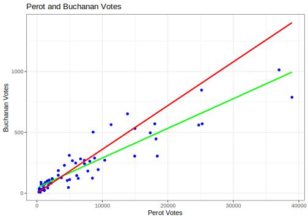

5.3 MLE Estimation
This section will discuss the general process for deriving maximum likelihood estimators. It’s all very exciting. It builds on the resources from the previous sections. In the next section, we will go through this process for a binary dependent variable. Here, we lay out the overview.
5.3.1 Deriving Estimators
Recall, we’ve already gone through a few steps of maximum likelihood estimation.
Initial Setup
- What is the data generating process? This means think about the structure of the dependent variable. Is it continuous, is it a count, is it binary, is it ordered? Based on this, describe the probability distribution for \(Y_i\).
- Define the likelihood for a single observation
- Define the likelihood for all observations
- Find the log-likelihood
Now we add steps building on the log-likelihood.
- Maximize the function with respect to (wrt) \(\theta\)
- Take the derivative wrt \(\theta\). We call this the “score”
- Set \(S(\theta) = 0\) and solve for \(\hat \theta\) (if possible)
- If not possible (often the case), we use an optimization algorithm to maximize the log likelihood.
- Take the second derivative of the log likelihood to get the “hessian” and help estimate the uncertainty of the estimates.
5.3.2 Score function
The first derivative of the log-likelihood is called the score function: \(\frac{\delta \ell}{\delta \theta} = S(\theta)\). This will tell us how steep the slope of the log likelihood is given certain values of the parameters. What we are looking for as we sift through possible values of the parameters, is the set of values that will make the slope zero, signalling that the function has reached a peak (maximizing the likelihood.)
We set the \(S(\theta) = 0\) and solve for \(\hat \theta\) (if possible).
- \(\hat \theta\) are the slopes/gradient, which we use as estimates (e.g., \(\hat \beta\)).
- We can interpret the sign and significance just as we do in OLS.
- But, unlike OLS, most of the time, these are not linear changes in units of \(Y\)
- We have to transform them into interpretable quantities
Example: Normally distributed outcome
Start with the log-likelihood
\[\begin{align*} \ell(\theta | Y) &= \sum_{i = 1}^N \log \Bigg( \frac{1}{\sigma\sqrt{2\pi}}e^{\frac{-(Y_i-\mu)^2}{2\sigma^2}}\Bigg)\\ &= \sum_{i = 1}^N \underbrace{\log \Bigg( \frac{1}{\sigma\sqrt{2\pi}}\Bigg) + \log e^{\frac{-(Y_i-\mu)^2}{2\sigma^2}}}_\text{Using the rule $\log ab = \log a + \log b$}\\ &= \underbrace{\sum_{i = 1}^N \log \frac{1}{\sigma\sqrt{2\pi}} - \frac{(Y_i-\mu)^2}{2\sigma^2}}_\text{The second term was of the form $\log e ^ a$, we can re-write as $a * \log e$. $\log e$ cancels to 1, leaving us with just $a$.}\\ &= \sum_{i = 1}^N \log \frac{1}{\sigma\sqrt{2\pi}} - \frac{(Y_i-\mathbf{x}_i'\beta)^2}{2\sigma^2} \end{align*}\]
- Note: when you see \(\mathbf{x}_i'\beta\), usually that is the representation of the multiplication of \(k\) covariates (a \(1 \times k\) vector) for a particular observation \(i\) by \(k \times 1\) coefficient values \(\beta\). You can contrast this with \(X\beta\), which represents \(n \times k\) rows of observations with \(k\) covariates multiplied by the \(k \times 1\) coefficients. You will see both notations depending on if notation is indexed by \(i\) or represented fully in matrix form. The \(\mathbf{x_i'}\) representation tends to come up more when we are dealing with likelihood equations. Here is a short video relating these notations.
Take the derivative wrt \(\theta\). Note: we have to take two derivatives- one for \(\mu\) (\(\beta\)) and one for \(\sigma^2\). For this example we will focus only on the derivative wrt to \(\beta\), as that it what gets us the coefficient estimates.5
Note: Below, we can simplify the expression of the log likelihood for taking the derivative with respect to \(\beta\) because any term (i.e., the first term in the log likelihood in this case) that does not have a \(\beta\) will fall out of the derivative expression. This is because when we take the derivative with respect to \(\beta\) we treat all other terms as constants, and the slope of a constant (the rate of change of a constant) is zero. The curly \(\delta\) in the expression below means “the derivative of …” with respect to \(\beta\).
\[\begin{align*} \delta_\beta \ell(\theta | Y) &= -\frac{1}{2\sigma^2}\sum_{i = 1}^N \delta_\beta (Y_i-\mathbf{x}_i'\hat \beta)^2 \end{align*}\] The right term should look familiar! It is the same derivative we take when we are minimizing the least squares. Therefore, we will end up with \(S(\hat \theta)_\beta = \frac{1}{\sigma^2}X'(Y - X\hat \beta)\). We set this equal to 0. \[\begin{align*} \frac{1}{\sigma^2}X'(Y - X\hat \beta) &= 0\\ \frac{1}{\sigma^2}X'Y &= \frac{1}{\sigma^2}X'X\hat \beta \\ (X'X)^{-1}X'Y = \hat \beta \end{align*}\]
5.3.3 Hessian and Information Matrix
The second derivative of the log-likelihood is the Hessian \((H(\theta))\).
- The second derivative is a measure of the curvature of the likelihood function. This will help us confirm that we are at a maximum, and it will also help us calculate the uncertainty.
- The more curved (i.e., the steeper the curve), the more certainty we have.
- The \(I\) stands for the information matrix. The \(H\) stands for Hessian. \(I(\theta) = - \mathbb{E}(H)\)
- \(var(\theta) = [I(\theta)]^{-1} = ( - \mathbb{E}(H))^{-1}\)
- Standard errors are the square roots of the diagonals of this \(k \times k\) matrix (like
vcov()in OLS)
Example: Normal
Start with the log-likelihood
\[\begin{align*} \ell(\theta | Y) &= \sum_{i = 1}^N \log \frac{1}{\sigma\sqrt{2\pi}} - \frac{(Y_i-x_i'\beta)^2}{2\sigma^2} \end{align*}\]
Because our \(\theta\) has two parameters, the Hessian actually has four components. For this example, we will focus on one: the first and second derivatives wrt \(\beta\).
Recall the first derivative = \(\frac{1}{\sigma^2}X'(Y - X\hat \beta)\).
We now take the second derivative with respect to \(\hat \beta\)
\[\begin{align*} \frac{\delta^2}{\delta \hat \beta} \frac{1}{\sigma^2}X'(Y - X\hat \beta)&= -\frac{1}{\sigma^2}X'X \end{align*}\]
To get our variance, we take the inverse of the negative (-) of this:
- \(\sigma^2(X'X)^{-1}\) Should look familiar!
With this example, we can start to see why lm and glm for a normally distributed outcome generate the same estimates. The maximum likelihood estimator is the same as the least squares estimator.
5.3.4 MLE Estimation Algorithm
Suppose we are interested in finding the true probability \(p\) that a comment made on twitter is toxic, and we have a small sample of hand-coded data. Let’s say we have \(n=8\) observations where we could observe a \(y_i = 1\) or \(0\). For example, let’s say we read an online sample of tweets and we classified tweets as “toxic=1” or “nontoxic=0.” In our sample of \(n=8\), we coded 6 of them as toxic and 2 as nontoxic.

We can write down the likelihood for a single observation using the Bernouilli pmf:
\(L(p | y_i) = p^{y_i}*(1-p)^{(1-y_i)}\)
We could then write out the likelihood for all 8 observations as follows:
- Where the equation simplifies to \(p\) for observations where \(y_i\) = 1 and (1-p) for observations where \(y_i\) = 0. For simplicity, let’s say \(i=1\) to \(6\) were toxic, and \(i=7\) to \(8\) were nontoxic.
- \(L(p | \mathbf{y}) = p * p * p * p * p * p * (1-p) * (1-p)\)
Now a naive way to maximize the likelihood would be to just try out different quantities for \(p\) and see which give us the maximum.
## Let's try this for different p's
p <- seq(.1, .9, .05)
L <- p * p * p * p * p * p * (1-p) * (1-p)We can then visualize the likelihood results and figure out about at which value for \(\hat p\) we have maximized the likelihood.
plot(x=p, y=L, type="b",
xaxt="n")
axis(1, p, p)
When we have more complicated models, we are taking a similar approach–trying out different values and comparing the likelihood (or log likelihood), but we will rely on a specific algorithm(s) that will help us get to the maximum a bit faster than a naive search would allow.
Don’t worry the built-in functions in R will do this for you (e.g., what happens under the hood of glm()), but if you were to need to develop your own custom likelihood function for some reason, you could directly solve it through an optimization algorithm if no such built-in function is appropriate.
You can skip the details below if you wish and jump to the MLE Properties section. This content will only be involved in problem sets as extra credit, as you may not have to use optim in your own research.
The optim function in R provides one such approach. For this optimization approach, we will need to.
- Derive the likelihood and/or log likelihood function and score
- Create an R
functionfor the quantity to want to optimize (often the log likelihood) where given we provide the function certain values, the function returns the resulting quantity. (Kind of like when we supply the functionmean()with a set of values, it returns the average of the values by computing the average under the hood of the function.) - Use
optim()to maximizeoptim(par, fn, ..., gr, method, control, hessian,...), wherepar: initial values of the parametersfn: function to be maximized (minimized)gr: optional argument, can include the gradient to help with optimization...: (specify other variables infn)method: optimization algorithmcontrol: parameters to fine-tune optimizationhessian: returns the Hessian matrix ifTRUE
By default, optim performs minimization. Make sure to set control = list(fnscale=-1) for maximization
- For starting values
par, least squares estimates are often used. More sensible starting values help your optimize more quickly. You may need to adjust themaxitcontrol parameter to make sure the optimization converges. - A commonly used
methodisBFGS(a variant of Newton-Raphson), similar to whatglm()uses, but there are other methods available.
Example 1: estimating p
Let’s take our relatively simple example about toxic tweets above and optimize the likelihood. First, we create a function for the likelihood that will calculate the likelihood for the values supplied. In the future, our models will be complicated enough, we will stick with the log likelihood, which allows us to take a sum instead of a product.
One benefit of R is that you can write your own functions, just like mean() is a built-in function in R. For more information on writing functions, you can review Imai QSS Chapter 1 pg. 19..
lik.p <- function(p){
lh <- p * p * p * p * p * p * (1-p) * (1-p)
return(lh)
}Ok, now that we have our likelihood function, we can optimize. We just have to tell R a starting parameter for \(\hat p\). Let’s give it a (relatively) bad one just to show how it works (i.e., can optim find the sensible .75 value. If you give the function too bad of a value, it might not converge before it maxes out and instead return a local min/max instead of a global one.
startphat <- .25
opt.fit <- optim(par = startphat, fn=lik.p, method="BFGS",
control=list(fnscale=-1))
## This should match our plot
opt.fit$par[1] 0.7500035## you should check convergence. Want this to be 0 to make sure it converged
opt.fit$convergence[1] 0Example 2: Linear Model
We can use optim to find a solution for a linear model by supplying R with our log likelihood function.
For the MLE of the normal linear model, our log likelihood equation is:
\[\begin{align*} \ell(\theta | Y) &= \sum_{i = 1}^N \log \frac{1}{\sigma\sqrt{2\pi}} - \frac{(Y_i-\mathbf{x}_i'\beta)^2}{2\sigma^2} \end{align*}\]
Now that we have our log likelihood, we can write a function that for a given set of \(\hat \beta\) and \(\hat \sigma^2\) parameter values, \(X\), and \(Y\), it will return the log likelihood.
- Below we indicate we will supply an argument
par(an arbitrary name) that will inclue our estimates for the parameters: \(k\) values for the set of \(\hat \beta\) estimates and a \(k + 1\) value for the \(\hat \sigma^2\) estimate. Many models with only have one set of parameters. This is actually a slightly more tricky example. - The
ltline is the translation of the equation above into R code
## Log Likelihood function for the normal model
l_lm <- function(par, Y, X){
k <- ncol(X)
beta <- par[1:k]
sigma2 <- par[(k+1)]
lt <- sum(log(1/(sqrt(sigma2)*sqrt(2*pi))) - ((Y - X %*% beta)^2/(2*sigma2)))
return(lt)
}Now that we have our function, we can apply it to a problem.
Let’s use an example with a sample of Democrats from the 2016 American National Election Study dataset. This example is based on the article “Hostile Sexism, Racial Resentment, and Political Mobilization” by Kevin K. Banda and Erin C. Cassese published in Political Behavior in 2020. We are not replicating their article precisely, but we use similar data and study similar relationships.
The researchers were interested in how cross-pressures influence the political participation of different partisan groups. In particular, they hypothesized that Democrats in the U.S. who held more sexist views would be demobilized from political participation in 2016, a year in which Hillary Clinton ran for the presidency.
The data we are using are available anesdems.csv and represent a subset of the data for Democrats (including people who lean toward the Democratic party). We have a few variables of interest
participation: a 0 to 8 variable indicating the extent of a respondent’s political participationfemale: a 0 or 1 variable indicating if the respondent is femaleedu: a numeric variable indicating a respondent’s education levelage: a numeric variable indicating a respondent’s age.sexism: a numeric variable indicating a respondent’s score on a battery of questions designed to assess hostile sexism, where higher values indicate more hostile sexism.
Let’s regress participation on these variables and estimate it using OLS, GLM, and optim. Note, OLS and GLM fit through their functions in R will automatically drop any observations that have missing data on these variables. To make it comparable with optim, we will manually eliminate missing data.
anes <- read.csv("https://raw.githubusercontent.com/ktmccabe/teachingdata/main/anesdems.csv")
## choose variables we will use
anes <- subset(anes, select=c("participation", "age", "edu", "sexism", "female"))
## omit observations with missing data on these variables
anes <- na.omit(anes)
## OLS and GLM regression
fit <- lm(participation ~ female + edu + age + sexism, data=anes)
fit.glm <- glm(participation ~ female + edu + age + sexism, data=anes,
family=gaussian(link="identity"))Now we will build our data for optim. We need \(X\), \(Y\), and a set of starting \(\hat \beta\) and \(\hat \sigma^2\) values.
## X and Y data
X.anes <- model.matrix(fit)
Y.anes <- as.matrix(anes$participation)
## make sure dimensions are the same
nrow(X.anes)[1] 1585nrow(Y.anes)[1] 1585## Pick starting values for parameters
startbetas <- coef(fit)
## Recall our estimate for sigma-squared based on the residuals
k <- ncol(X.anes)
startsigma <- sum(fit$residuals^2) / (nrow(X.anes) - k )
startpar <- c(startbetas, startsigma)
## Fit model
## But let's make it harder on the optimization by providing arbitrary starting values
## (normally you wouldn't do this)
startpar <- c(1,1,1,1,1,1)
opt.fit <- optim(par = startpar, fn=l_lm, X = X.anes,
Y=Y.anes, method="BFGS",
control=list(fnscale=-1),
hessian=TRUE)We can compare this optimization approach to the output in glm().
We can first compare the log likelihoods
logLik(fit.glm)'log Lik.' -2661.428 (df=6)opt.fit$value[1] -2661.428We can compare the coefficients.
## Coefficients
round(coef(fit), digits=4)
round(coef(fit.glm), digits=4)
round(opt.fit$par, digits=4)[1:k](Intercept) female edu age sexism
0.9293 -0.2175 0.1668 0.0088 -0.9818
(Intercept) female edu age sexism
0.9293 -0.2175 0.1668 0.0088 -0.9818
[1] 0.9294 -0.2175 0.1668 0.0088 -0.9819We can add the gradient of the log likelihood to help improve optimization. This requires specifying the first derivative (the score) of the parameters. Unfortunately this means taking the derivative of that ugly normal log likelihood above. Again, with the normal model, we have two scores because of \(\hat \beta\) and \(\hat \sigma^2\). For others, we may just have one.
## first derivative function
score_lm <- function(par, Y, X){
k <- ncol(X)
beta <- as.matrix(par[1:k])
scorebeta <- (1/par[k+1]) * (t(X) %*% (Y - X %*% beta))
scoresigma <- -nrow(X)/(par[k+1]*2) + sum((Y - X %*% beta)^2)/(2 * par[k+1]^2)
return(c(scorebeta, scoresigma))
}
## Fit model
opt.fit <- optim(par = startpar, fn=l_lm, gr=score_lm, X = X.anes,
Y=Y.anes, method="BFGS",
control=list(fnscale=-1),
hessian=TRUE)In addition to using optim, we can program our own Newton-Raphson algorithm, which is a method that continually updates the coefficient estimates \(\hat \beta\) until it converges on a set of estimates. We will see this in a future section. The general algorithm involves the components we’ve seen before: values for \(\hat \beta\), the score, and the Hessian.
- Newton-Raphson: \(\hat \beta_{new} = \hat \beta_{old} - H(\beta_{old})^{-1}S(\hat \beta_{old})\)
Essentially, you need to take derivatives with respect to each of the parameters. Some models we use will have only one parameter, which is easier.↩︎